Templates
123 free app templates and games for Android
Ready-made apps and games you can try right here: 3D showrooms, arcade games, tools, apps that earn with ads and apps that sell in-app purchases. Pick one in the AppMint app, give it your name, icon and colours, and build it as your own Android app.
Play free games online
48 games that run right in your browser on a phone or a computer, no download. Each one is also a template you can build as your own Android game.


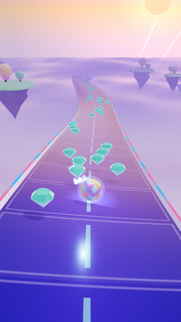
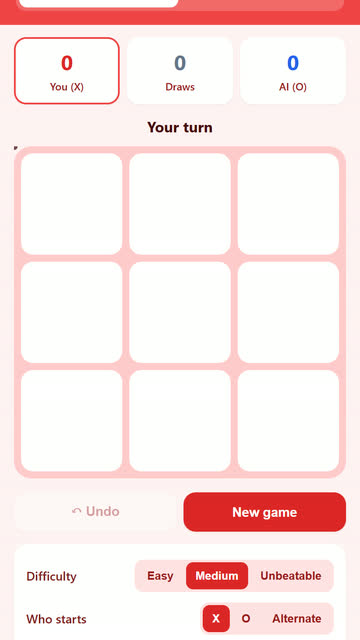
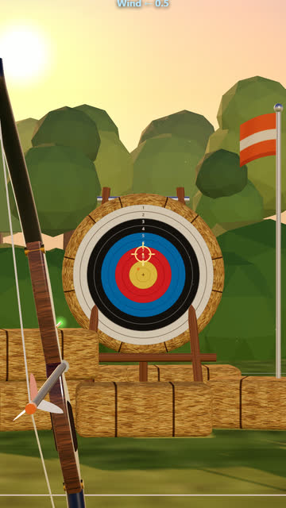

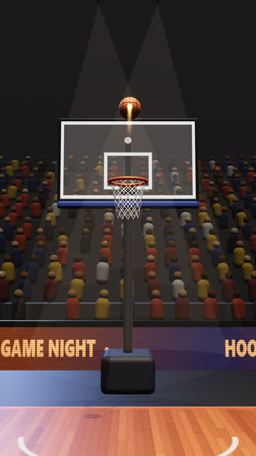


Browse all templates
123 templates
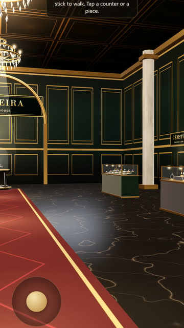
3D Jewellery Store
Walk into a grand 3D jewellery showroom, lift any ring, necklace or gemstone out of its case, and see its price, wishlist it or enquire on WhatsApp. WebGL 3DSaves progressOpen linkWorks offline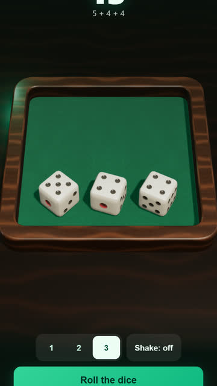
3D Dice Roller
Roll one to three 3D dice with a tap or a shake, feel them land, and see your last ten rolls. WebGL 3DMotion sensorsVibration patternsVibrate3D Cube Puzzle
Drag the rows of a 3x3 colour cube to turn them, beat an easy or full mix with as few moves as you can, and spin the cube to look around. WebGL 3DFull-screen adsRewarded adsVibrate
3D Product Viewer
Spin a shiny 3D watch with your finger, try new colours, and save or share a picture of it. WebGL 3DShare fileSave to gallerySave file
Solar System 3D
Explore the Sun and eight planets in 3D, then tap a planet to fly to it and read a fun fact. WebGL 3DVibrate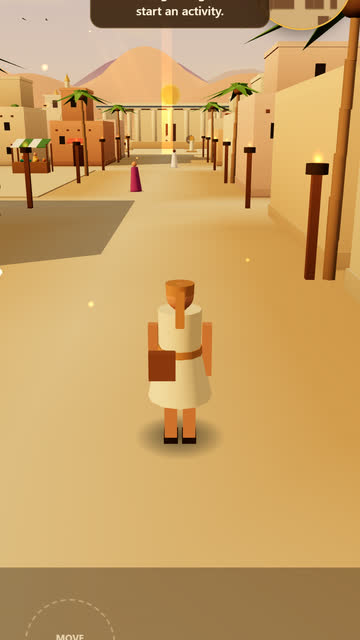
Velorra: Sun River City
Explore an invented sun-temple river city in 3D on foot, by chariot or by boat, hunt hidden relics, race the clock, run market deliveries and solve a light-beam temple puzzle. WebGL 3DFull-screen adsRewarded adsVibrate3D Marble Race
Steer a marble down a twisting, narrowing 3D track by dragging or tilting the phone, collect gems and dodge blocks for a new best distance. WebGL 3DMotion sensorsFull-screen adsRewarded ads3D Archery
Hold to draw the bow, drag to aim and let go to shoot at a 3D target that moves farther away, allowing for arrow drop and the wind. WebGL 3DFull-screen adsRewarded adsVibrate3D Basketball
Flick the ball to shoot hoops against the clock in a 3D court, with clean-shot bonuses and a hoop that starts moving in later levels. WebGL 3DFull-screen adsRewarded adsVibrate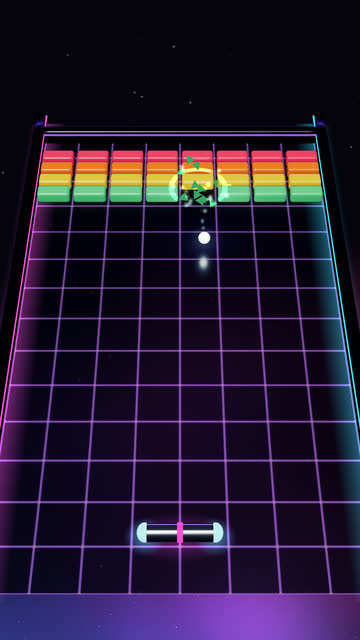
3D Block Breaker
Drag the paddle to bounce a ball into rows of 3D blocks, catch falling power-ups for a wider paddle, more balls or a slower ball, and clear level after level. WebGL 3DFull-screen adsRewarded adsVibrate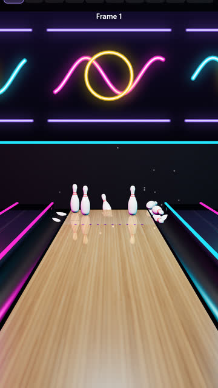
3D Bowling
Line up the ball, swipe to bowl and curve your swipe to hook it into ten 3D pins, with full ten-frame scoring for strikes and spares. WebGL 3DFull-screen adsRewarded adsVibrate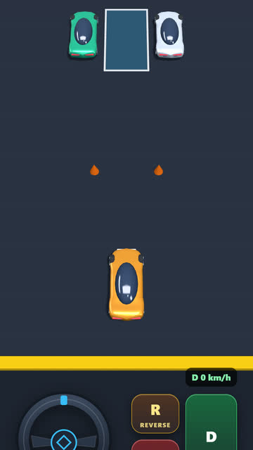
3D Car Parking
Steer, brake and reverse a car with on-screen pedals into the marked bay across ten parking-lot levels without bumping anything, earning up to three stars each. WebGL 3DFull-screen adsRewarded adsVibrate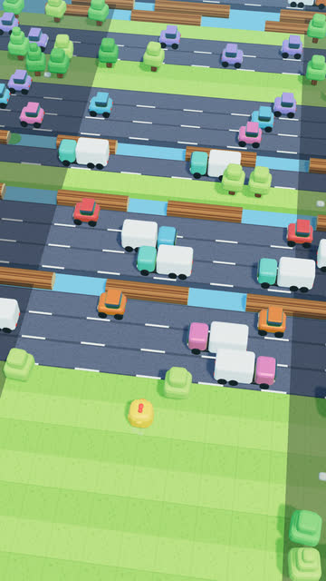
3D Cube Hopper
Hop a little cube forward across busy roads and log-filled rivers with taps and swipes, and see how far you get before the path closes behind you. WebGL 3DFull-screen adsRewarded adsVibrate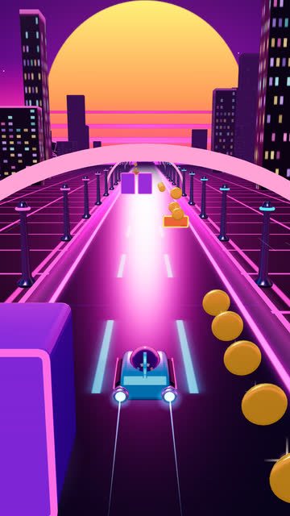
3D Lane Runner
Race a hover car down a three-lane neon track, swipe to switch lanes and jump, dodge the blocks and grab coins as the speed climbs. WebGL 3DFull-screen adsRewarded adsVibrate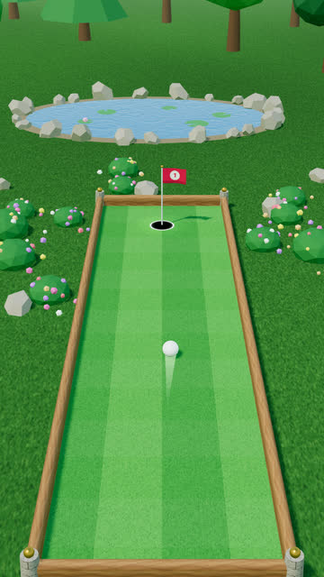
3D Mini Golf
Drag back to putt across six 3D mini golf holes with corners, blocks and a sliding bar, and finish the round in as few strokes as you can. WebGL 3DFull-screen adsRewarded adsVibrate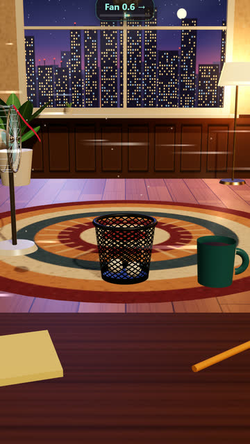
3D Office Toss
Flick a crumpled paper ball into an office bin while a desk fan blows it sideways, and keep your streak going as the bin moves farther away. WebGL 3DFull-screen adsRewarded adsVibrate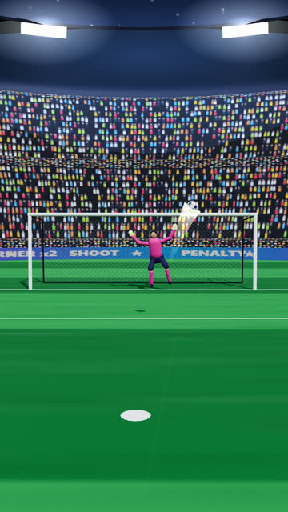
3D Penalty Kick
Swipe to shoot penalties past a goalkeeper who shuffles and dives, bending the ball with a curved swipe and aiming for the top corners. WebGL 3DFull-screen adsRewarded adsVibrate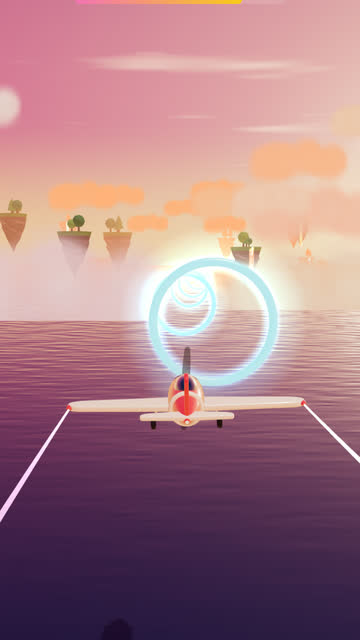
3D Sky Rings
Drag to steer a little plane through glowing 3D rings that refuel it, chase gold rings and combos, and keep flying as the rings shrink and speed up. WebGL 3DFull-screen adsRewarded adsVibrate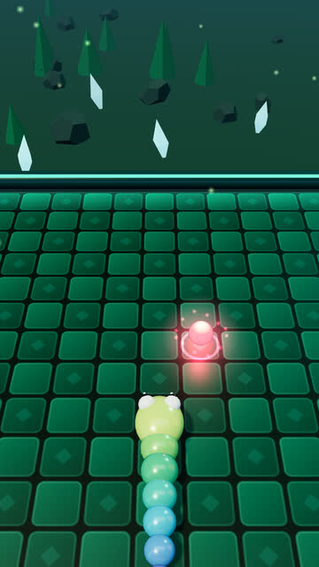
3D Snake
Steer a growing snake around a 3D board from a camera that rides behind its head, swiping left or right to turn and eating glowing orbs for points. WebGL 3DFull-screen adsRewarded adsVibrate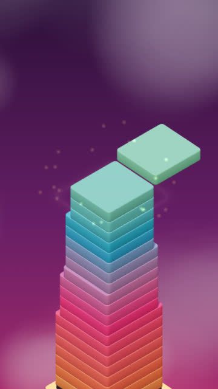
3D Stack Tower
Tap to drop each sliding block onto the tower, keep what overlaps and see how high you can build before you miss. WebGL 3DFull-screen adsRewarded adsVibrate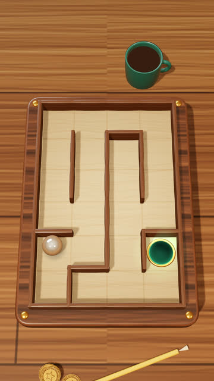
3D Tilt Maze
Tilt the phone or drag on the screen to roll a ball through 3D mazes that grow with every level, and reach the goal before time runs out. WebGL 3DMotion sensorsFull-screen adsRewarded ads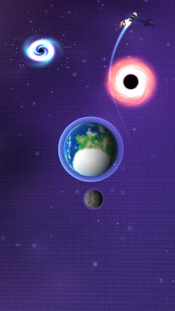
Gravity Sling
Pull back and fling a probe past shader-painted planets and a black hole, bend its path with real gravity and reach the wormhole before the fuel runs out. WebGL 3DFull-screen adsRewarded adsVibrate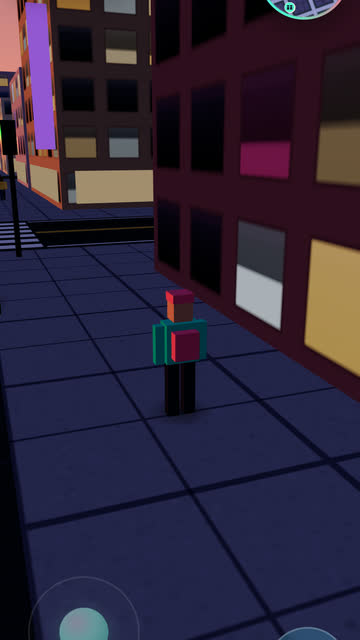
Lumen Bay City
Explore a glowing low-poly bay city on foot or by car, drive taxi fares, parcel runs, street races and ramp stunts, and spend your earnings on new cars. WebGL 3DFull-screen adsRewarded adsVibrate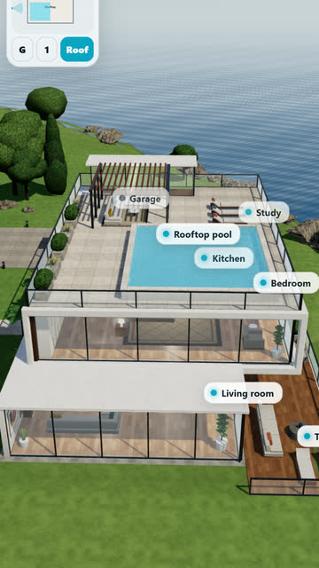
Lumen Cliff Villa
Tour an original glass-and-white smart villa on a sea cliff in 3D, orbit it or walk inside, and control lighting scenes, blinds, doors, a holographic TV, the fireplace, a robot vacuum and pool lights. WebGL 3DRewarded adsVibrateSaves progress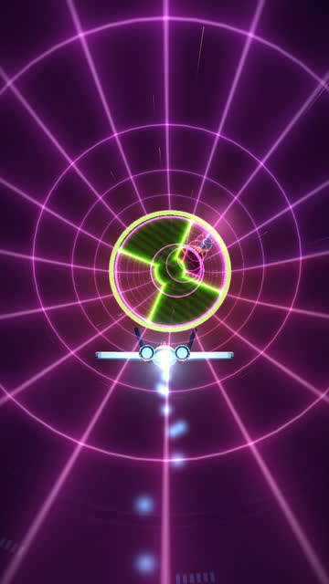
Neon Tunnel
Fly through an endless glowing neon tunnel that pulses to a beat, drag or tilt to slip through rotating barriers and hold on as the speed climbs. WebGL 3DDevice orientationFull-screen adsRewarded ads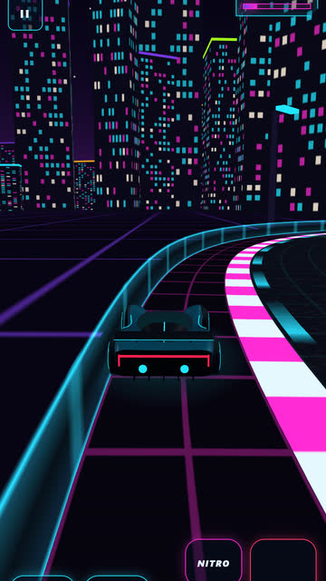
Supercar Race
Race a glowing concept hypercar three laps around a neon night city against three rivals, drifting through corners to fill your nitro. WebGL 3DDevice orientationFull-screen adsRewarded ads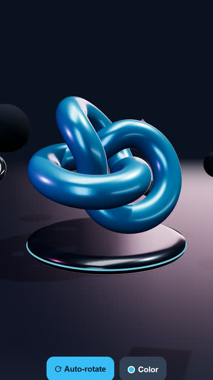
Three.js 3D Scene
Rotating 3D scene built with Three.js, with lights, shadows, touch orbit and pinch zoom. VibrateWebGL 3D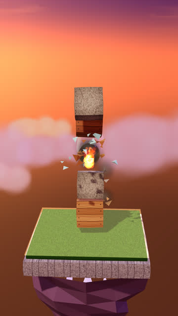
Tower Smash
Throw heavy balls at block towers on a floating island, watch real physics topple them and knock every block off with as few throws as you can. WebGL 3DFull-screen adsRewarded adsVibrate
Ads Demo
Show a banner, an interstitial and a rewarded ad from your own buttons, earn coins for rewarded views and watch every ad event live. Banner adsFull-screen adsRewarded adsToast messagesCoin Clicker with Ads
A tap-to-earn clicker game that earns from a Shop banner, a level-up interstitial and an optional rewarded 2x boost. Banner adsFull-screen adsRewarded adsVibrate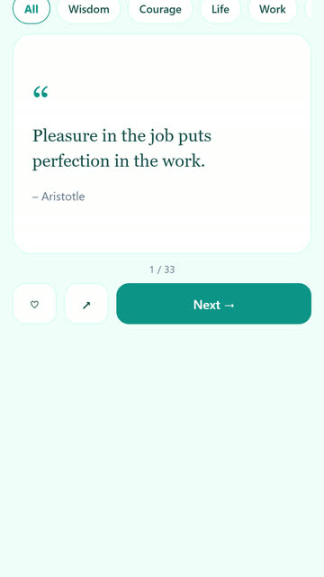
Daily Quotes (with ads)
A quotes app with favourites and sharing that earns with an interstitial every few quotes, a banner on the favourites tab and a rewarded ad that unlocks a bonus pack for 24 hours. Banner adsFull-screen adsRewarded adsShare
Story Reader (with ads)
A five-chapter story reader that earns with a banner on the chapter list, an interstitial after each chapter and a rewarded ad to skip the wait for the next one. Banner adsFull-screen adsRewarded adsVibrateTap Jumper (with ads)
An endless tap-to-jump game that earns with a banner on the game-over screen, an interstitial every third replay and a rewarded ad to continue a run. Banner adsFull-screen adsRewarded adsVibrateTrivia Night
Five-question trivia rounds with a rewarded-ad 50/50 hint, an interstitial after every third round and a banner on the results screen only. Rewarded adsFull-screen adsBanner adsRemove-ads aware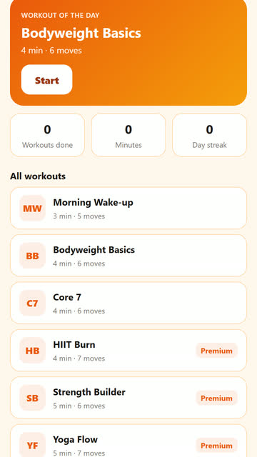
Fitness App with Subscription
A workout timer app where free workouts stay open and a monthly or yearly Google Play subscription unlocks the rest. In-app purchasesSubscriptionVibrateToast messages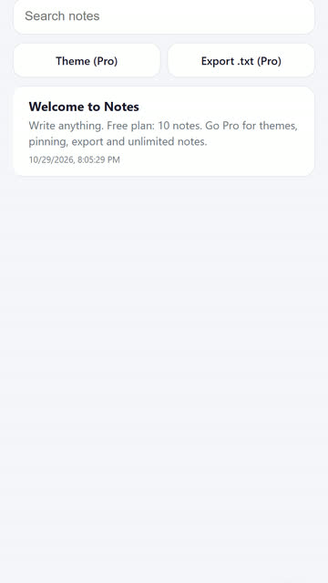
Notes with Pro Unlock
A notes app with a free plan and a one-time Google Play purchase that unlocks themes, pinning, export and unlimited notes. In-app purchasesSave fileVibrateToast messages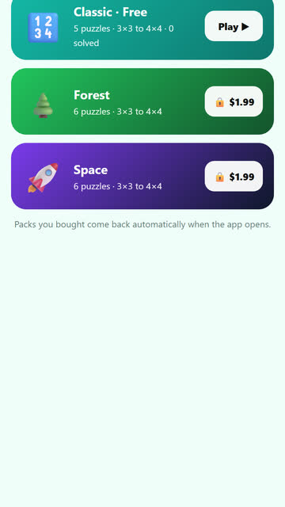
Puzzle Packs
Sliding number puzzle with a free pack and themed level packs sold as one-time Google Play purchases, with live prices and automatic restore. In-app purchasesLive pricesToast messagesVibrate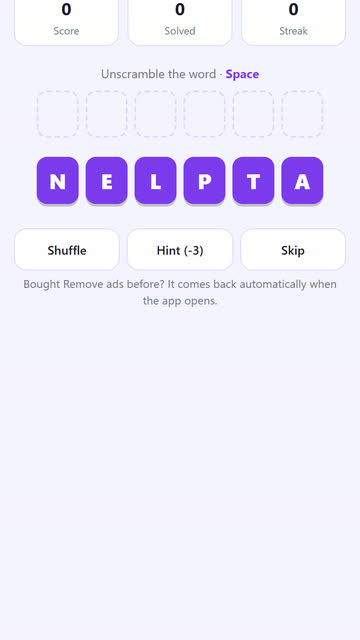
Word Puzzle with Remove Ads
Unscramble-the-word game with a banner and an ad break every few words, plus a one-time Remove ads purchase on Google Play that turns them off. Banner adsFull-screen adsRemove adsIn-app purchases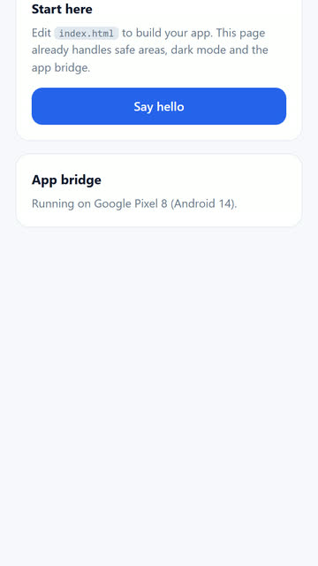
Blank Starter
A clean starting page with dark mode, safe areas and a feature-detected example of the app bridge. VibrateToast messagesDevice infoStatus bar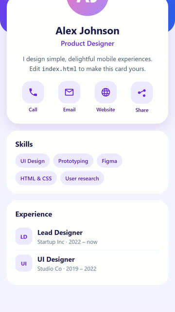
Business Card
A personal business card app with call, email, website and share buttons plus skills and experience sections to edit. ShareLinks
Clipboard Manager
Copy, paste and keep a searchable history of text snippets with pinned quick snippets. ClipboardToast messagesVibrateSaves progress
Deep Links
Shows which link opened the app, jumps to the matching screen and keeps a history, so you can test links from browsers, QR codes and notifications. Deep linksClipboardVibrateToast messages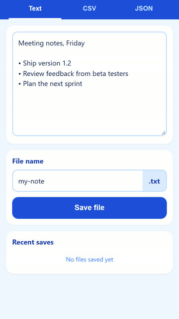
File Saver
Write plain text, edit a CSV table or check and format JSON, then save the file to any folder on the phone. Save fileCsvJSONVibrate
Native Features Tour
A tour of 22 phone features you can call from a web page, from toast, vibration and notifications to the flashlight, brightness, files and location. Toast messagesVibrateSpeechNotifications
Notifications
Send a notification now or schedule a reminder that Android delivers even when the app is closed, with a permission status and cancel. NotificationsScheduled notificationsPermission status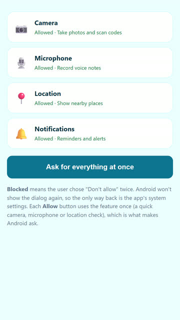
Permission Center
See whether camera, microphone, location and notifications are allowed, ask for each with a reason, and get back from a blocked permission. Permission statusCameraMicrophoneLocation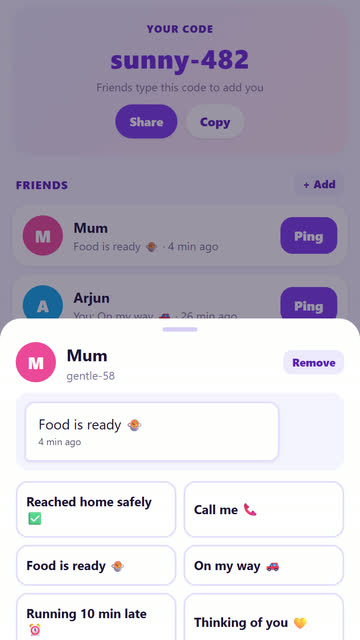
Ping a Friend
Add friends by their short code and send a one-tap ping like "Reached home safely" that pops up on their phone, even when their app is closed. Notify userPush inboxShareClipboard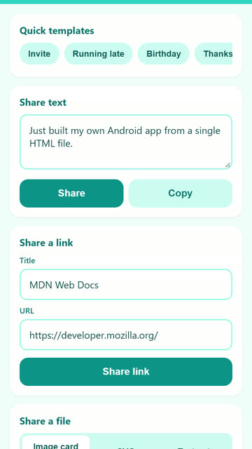
Share Sheet
Send text, links and generated image or text files to other apps through the Android share sheet. ShareShare fileClipboardToast messages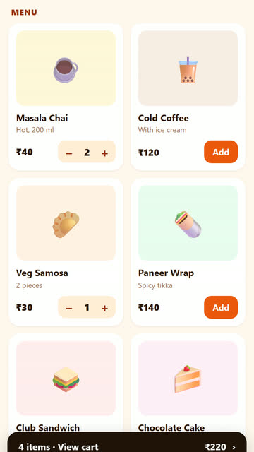
Shop with Order Alerts
A small shop with a cart where every order a customer places pops up as a notification on the seller's phone, even when the app is closed, with no server or database. Notify userPush inboxCartSaves progress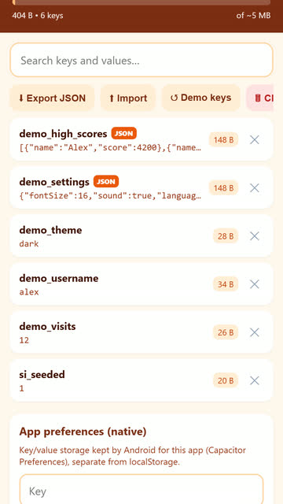
Storage Inspector
Browse, search, add, edit, import and export the app's localStorage keys, plus a panel for the native app preferences store. Save filePreferencesSaves progressWave Rider
Surf an endless river by dragging or tilting the phone, dodging rocks, logs, buoys and whirlpools, hitting ramps for tricks and grabbing shells, shields and speed boosts. CanvasHigh scoreDevice orientationVibrate2048
The classic sliding number puzzle with swipe controls, undo and a saved best score. VibrateSaves progressTic-Tac-Toe
Play a friend or the computer at three difficulty levels, with undo and a running score. VibrateTwo playersScoresSpace Shooter
Drag your ship through waves of weaving, diving and gunning alien squads with auto-fire, power-ups and a mothership boss every fifth wave. CanvasHigh scoreVibrateFull-screen ads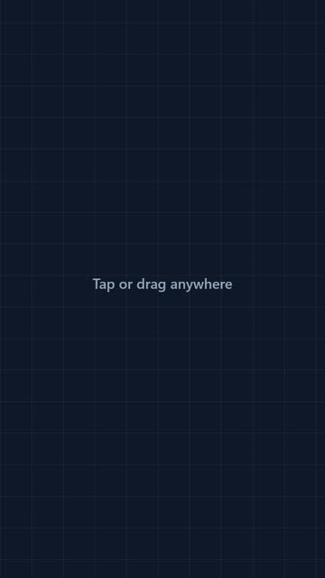
Full-screen Canvas
Edge-to-edge canvas starter for games that hides the system bars, keeps the screen on and reacts to multi-touch. FullscreenKeep awakeVibrateCanvas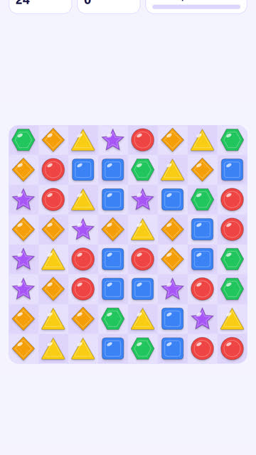
Gem Cascade
Swipe to swap gems and line up three or more on an 8x8 board, with cascades, combo specials, a move limit and a goal on every level. Full-screen adsRewarded adsVibrateHigh score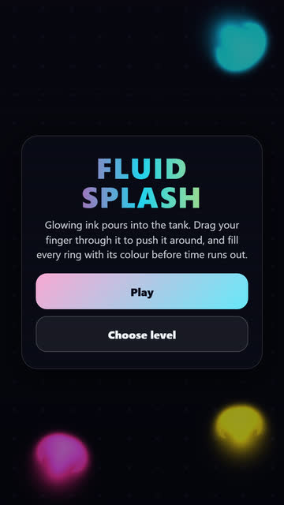
Fluid Splash
Push swirling, glowing ink through a real-time fluid simulation with your finger, mix colours and fill every target zone before the timer runs out. WebGL 3DFull-screen adsRewarded adsVibrate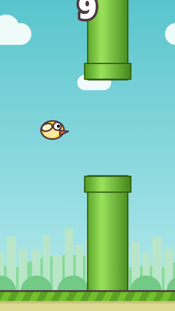
Flappy Bird
Tap to flap through the pipes in this canvas arcade game with a best score and a buzz on every crash. VibrateCanvasHigh score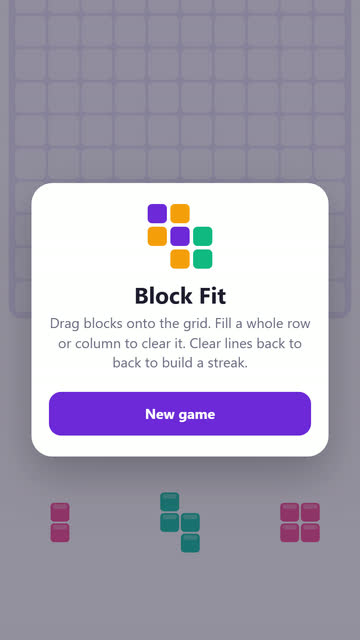
Block Fit
Drag blocks from a tray of three onto a 10x10 grid and fill whole rows or columns to clear them, with streak bonuses, a saved game and a best score. CanvasHigh scoreSaves progressVibrate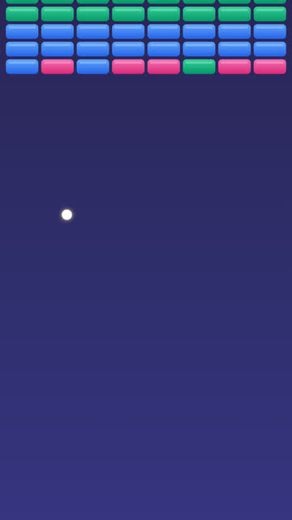
Brick Breaker
A classic brick breaker with touch paddle control, several levels, lives, a best score and vibration on hits. VibrateCanvasHigh score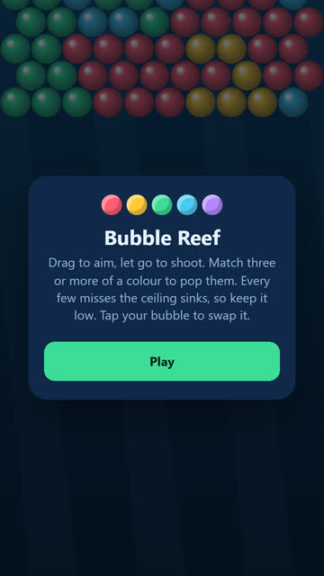
Bubble Reef
Aim with a drag and shoot coloured bubbles into the reef, pop groups of three or more, drop whole clusters and stay ahead of the sinking ceiling across endless levels. CanvasHigh scoreSaves progressVibrate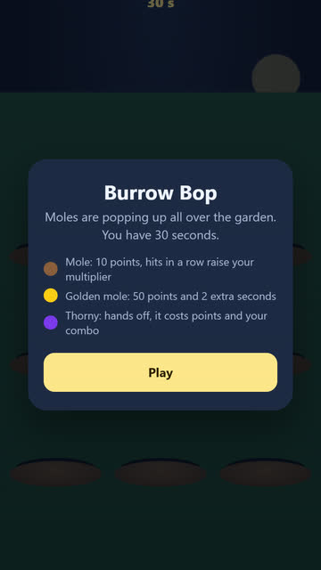
Burrow Bop
Bop moles in a moonlit garden during 30-second rounds, chain hits into combo multipliers, catch the rare golden mole for bonus time and leave the thorny ones alone. High scoreSaves progressVibrateTimer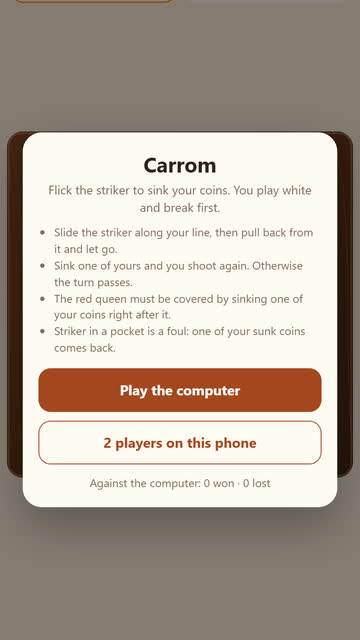
Carrom
Flick the striker on a polished wooden carrom board with real coin physics, the red queen and fouls, against a computer that plans its shots or a friend on the same phone. Two playersSaves progressVibrateFull-screen ads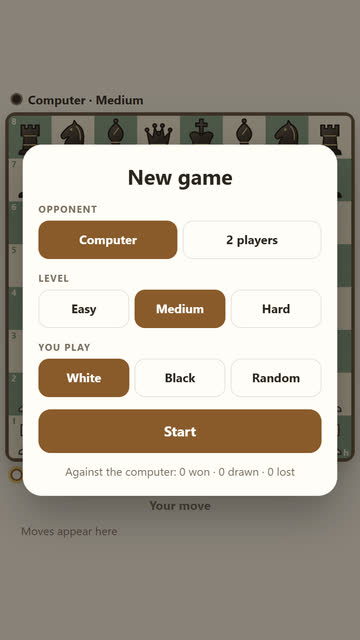
Chess
Full-rules chess against a three-level computer opponent or a friend on the same phone, with drag or tap moves, move list, undo and a saved game. Two playersSaves progressVibrateFull-screen ads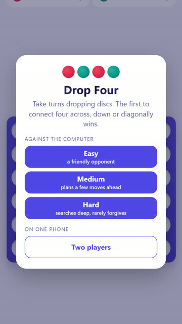
Drop Four
Drop discs into a seven-column board and connect four in a line, against a minimax computer opponent on three difficulty levels or a friend on the same phone. Two playersHigh scoreSaves progressVibrateGizmo Tycoon
Tap your workshop to build gizmos, buy machines that keep producing, hit milestone boosts, sell the company for investors and collect what you earned while away. High scoreSaves progressVibrateFull-screen adsMemory Match
Flip cards two at a time to find every pair, with three board sizes, a move counter, a timer and best scores. VibrateHigh scoreMine Hunt
Clear a hidden minefield on Easy, Medium or Hard with a safe first tap, long-press flags, number chording, a timer and best times per level. High scoreSaves progressVibrateTimerOrbit Dash
A one-tap arcade game where your spark circles a glowing ring and every tap dashes it outward to the next orbit, slipping past spinning barriers in short, colourful rounds. CanvasHigh scoreVibrateFull-screen adsPaddle Duel
A neon paddle-and-ball duel to seven against a computer on three levels or a friend on the same phone, where each half of the screen drags its own paddle and long rallies ignite the ball. CanvasTwo playersHigh scoreSaves progressQuiz
Multiple-choice trivia in several categories with a timer per question, a score, best results and an answer review. VibrateTimerHigh scoreRoyal Patience
Classic seven-column patience with draw-one or draw-three, drag or tap to move, unlimited undo, auto finish, a saved deal and a card fountain when you win. High scoreSaves progressVibrateTimerSky Hopper
Bounce ever higher on drifting, crumbling and spring-loaded platforms by tilting the phone or holding either side of the screen, scoring by the height you reach. CanvasHigh scoreDevice orientationVibrateSnake
Classic swipe-controlled snake game on a canvas with a saved high score and a buzz when you eat or crash. VibrateCanvasHigh scoreSudoku
Freshly generated number puzzles with one solution each in Easy, Medium and Hard, with pencil notes, undo, mistake marks, a timer and hints. Full-screen adsRewarded adsVibrateTimerWord Search
Find hidden words in a fresh letter grid from ten offline themes, dragging across rows, columns and diagonals in any of eight directions against the clock. Full-screen adsRewarded adsVibrateTimer
App Files
Create, open, append to, share and delete text files kept privately inside the app, with no storage permission needed. FilesShareToast messages
BMI Calculator
Work out Body Mass Index in metric or imperial units, see the WHO category and keep a saved history of results. VibrateToast messagesHistory
Calculator
A clean calculator with brackets, a running preview, a history list and a light tap buzz on every key. VibrateExpense Tracker
Track income and spending by month and category, then export everything to a CSV file. Save fileToast messagesSaves progressHabit Tracker
Track daily habits with icons and colours, tick them off each day and watch your streaks grow. VibrateToast messagesStreaks
Markdown Editor
Live Markdown editor with a formatting toolbar, preview and split views, an auto-saved draft, .md export and Copy HTML. Save fileClipboardToast messagesOpen link
Notes
A notes app with search, sharing and export of every note to a Markdown file. ShareSave fileSaves progress
Pomodoro Timer
A focus timer with short and long breaks, adjustable lengths, a daily session count and a reminder when each session ends, even with the app closed. NotificationsRemindersKeep awakeVibrate
Recipe Book
Browse, search and favourite recipes, scale servings, add your own and follow a step-by-step cooking mode that keeps the screen on. Keep awakeShareToast messagesVibrate
Stopwatch
A stopwatch with lap times that keeps the screen on while it runs. Keep awakeVibrate
Todo List
A simple task list with filters, swipe to complete and tasks saved on the phone. VibrateSaves progress
Unit Converter
Convert length, weight, temperature, speed, area, volume, time and data units both ways, with a quick reference table. VibrateWorks offline
Weather
Weather screen with current conditions, hourly and 7-day forecasts and a status bar that matches the sky, using built-in demo data. Status bar colorWorks offlineDemo data
Accelerometer
Live accelerometer values with peaks, a scrolling graph and a bubble level. Motion sensors
Battery Monitor
Battery level, charging state, charge rate and a live history chart, with a low-battery alert while the app is open. BatteryNotificationsVibrateToast messages
Brightness
Set this app's screen brightness with a slider or presets, with a warm night reader filter, and hand control back to the system when you leave. BrightnessVibrate
Compass
Smooth compass dial with heading, cardinal direction, a heading lock and a buzz when you face north. Device orientationVibrate
Device Info
Shows the phone model, Android version, battery, memory, screen and every web feature this phone supports. Device infoClipboardShareToast messages
Flashlight
Big power button that switches the camera flash, with strobe and SOS modes and a bright screen light on phones without a flash. TorchScreen brightnessVibrate
Gyroscope
See live rotation rate and orientation from the phone's motion sensors, with a 3D card that tilts as you move and a calibrate button. Motion sensorsVibrate
Keep Screen On
Stops the screen from sleeping, forever or for a set time, with one big switch. Keep awakeToast messagesVibrate
Location Tracker
Shows your GPS position and measures the distance you walk, with a sketch of your path. LocationKeep awakeClipboardOpen maps
Network Status
Shows whether the phone is online, the connection type and quality, logs every change and runs a quick connection speed test. NetworkToast messagesVibrate
NFC Tools
Read NFC tags, stickers and cards, and write a link, plain text or a phone number to a writable tag. NFCVibrateToast messages
Private Vault
A private notes vault locked with a 4-digit PIN that also opens with the phone's fingerprint or face unlock and locks itself when you leave. BiometricPIN lockVibrate
QR and Barcode Scanner
Scan QR codes and barcodes with Google's scanner screen, filter by code type, then copy, open or share the result and keep a scan history. QR and barcode scanClipboardShareOpen link
Step Counter
Counts your steps from the phone's motion sensor while the app is open on screen, with a daily goal, distance, calories and a 7-day chart. Motion sensorsKeep awake
Vibration Lab
Play vibration presets, record your own pattern by tapping and save the ones you like. VibrateVibration patternsToast messagesSaves progress
Camera
Live camera preview with front and back switching, nine filters and snapshots you can save to the gallery or share. CameraSave to galleryShare fileVibrate
Drawing Pad
Draw with a brush and eraser in any colour and size, undo and redo, then save your drawing as a PNG or share it. CanvasSave fileShareVibrate
Photo Compressor
Pick a photo, choose its size and quality, then save the smaller copy to your gallery or share it. File pickerSave to galleryShare fileToast messages
Pro Camera
A full-screen camera with front and back switching, flash where the camera supports it, a self-timer and grid, then save photos to the gallery or share them. CameraSave to galleryShareHaptics
QR Generator
Make QR codes offline for text, links, Wi-Fi and contacts, pick colours and size, then save or share the PNG. Save fileShare fileToast messagesWorks offline
Text to Speech
Reads any text aloud with a choice of voice, speed and pitch and highlights each word as it is spoken. Speech synthesis
Voice Notes
Dictate notes in 12 languages and watch your words turn into text, then save, search, edit, copy or share them. Speech to textClipboardShareToast messages
Voice Recorder
Record voice memos with a live level meter, play them back and save them as audio files. MicrophoneSave fileVibrateToast messages
Bootstrap Dashboard
A store dashboard built with Bootstrap 5, with a side menu, tabs, a table and a new-order form, bundled to work offline. BootstrapVibrateWorks offline
Brython (Python in the page)
Write your app logic in Python 3 with Brython, bundled with the app so it works offline. PythonVibrateWorks offline
Chart.js Expenses
Expense tracker drawn with Chart.js, with category, monthly and trend charts and expenses saved on the phone. VibrateToast messagesChartsSaves progress
jQuery Starter
A to-do list built with a bundled copy of jQuery, with filters, fade animations, saved tasks and a native toast on delete. VibrateToast messagesSaves progressWorks offline
Leaflet Map
OpenStreetMap map built with Leaflet, with a Locate me button and pins you drop, name and keep on the phone. LocationVibrateMapSaves progress
Phaser Jumper
A platform jumping game made with the Phaser 3 game engine, with touch buttons and a saved best score, bundled to work offline. PhaserGameVibrateWorks offline
Python in Your App (PyScript)
Run Python code inside the app with PyScript and MicroPython, shown with a greeter and a calculator whose maths run in Python, all bundled so it works offline. PythonPyScriptVibrateWorks offline
React Starter
React 18 with htm and no build step, showing a counter and a saved to-do list with haptic taps. VibrateSaves progress
Shopping List (Alpine.js)
A shopping list with categories, quantities, prices and a running total, built with Alpine.js, which is bundled so it works offline. AlpinejsVibrateWorks offline
Tailwind Landing Page
A mobile landing page styled with Tailwind CSS, shipped as a prebuilt stylesheet so it works offline. TailwindToast messagesWorks offline
Todo List (Vue)
A reactive todo app with filters, double-tap editing and saved items, built with Vue 3, which is bundled so it works offline. VueVibrateWorks offlineNo template matches that search. Try another word, or pick All.